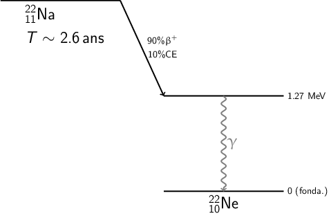
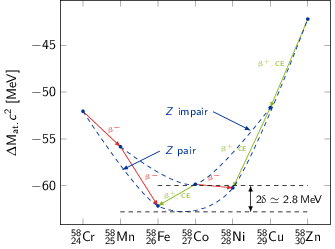

TD8 : Masses et désintégrations nucléaires
1 Définitions
- masse nucléaire
- la masse nucléaire correspond à la masse du noyau i.e.
\begin{align*}
m\left(^\text{A}_\text{Z}\text{X}\right)c^2=Zm_pc^2+(A-Z)m_nc^2-B_N
\end{align*}
où \(B_N\) est égal à l'énergie de liaison des nucléons au sein du noyau.
- masse atomique
- cette masse est associée à la masse de l'atome soit à la
masse nucléaire à laquelle s'ajoute celle du cortège
électronique
\begin{align*}
M_\text{at.}\left(^\text{A}_\text{Z}\text{X}\right)c^2=m\left(^\text{A}_\text{Z}\text{X}\right)c^2+Zm_ec^2-B_e
\end{align*}
où \(B_e\) correspond à l'énergie de liaison des électrons. Cette quantité est particulièrement faible (∼ 3 keV/\(e^-\)) au regard des masses mises en jeu en physique nucléaire. On aura donc tendance à la négliger si bien que
\begin{align*} M_\text{at.}\left(^\text{A}_\text{Z}\text{X}\right)c^2\simeq Z\left(m_pc^2+m_ec^2\right)+\left(A-Z\right)m_nc^2-B_N \end{align*} - excès de masse atomique
- écart entre la masse atomique et la masse molaire
\(A\). Le carbone 12 sert toujours de référence à savoir
\begin{align*}
\Delta M\left(^{12}_{6}\text{C}\right)&=0\\
\Delta M\left(^\text{A}_\text{Z}\text{X}\right)&=M_\text{at.}\left(^\text{A}_\text{Z}\text{X}\right) - A\text{ en u.m.a}\\
\Delta M\left(^\text{A}_\text{Z}\text{X}\right)c^2&=M_\text{at.}\left(^\text{A}_\text{Z}\text{X}\right)c^2 - 931.5A\text{ en MeV}\\
\end{align*}
C'est généralement les valeurs \(\Delta M\left(^\text{A}_\text{Z}\text{X}\right)c^2\) qui sont tabulées.
- énergie de liaison des nucléons
- la valeur de \(B_N\) est approximée par la
formule de Bethe et Weizsäcker
\begin{align*}
B_N=\underbrace{a_VA - a_SA^{2/3}}_{\text{modèle de la goutte liquide}}-\underbrace{a_C\frac{Z^2}{A^{1/3}}}_{\text{Coulomb}}-\underbrace{a_A\frac{\left(N-Z\right)^2}{A}}_{\text{asymétrie}}+\underbrace{\delta(A,Z)}_{\text{appariement}}
\end{align*}
Cette formule découle de l'analogie entre un fluide et un noyau à savoir que l'énergie de liaison d'une goutte liquide est d'autant plus grande que son volume est important (terme \(a_VA\) où \(R\propto A\)). Les nucléons en surface contribuent néanmoins moins puisqu'ils ont moins de voisins. La goutte cherche donc à minimiser sa surface d'où sa forme sphérique (terme \(a_SA^{2/3}\)). Par ailleurs, il faut tenir compte de l'interaction coulombienne : la répulsion entre protons du noyau entraîne une diminution de l'énergie de liaison. De plus, l'énergie potentielle du noyau sera d'autant plus grande que les niveaux de Fermi des neutrons et protons seront proches (terme symétrique \(a_A\frac{\left(N-Z\right)^2}{A}\)). Ce terme d'asymétrie traduit le fait que les nucléons étant des fermions, avoir un excédent de proton ou de neutron a tendance à augmenter l'énergie et donc diminuer la liaison du noyau en raison du remplissage des niveaux de Fermi. Ainsi, un noyau cherche à égaliser le nombre de proton et de neutrons tout du moins pour les noyaux légers. Enfin, l'appariement \(\delta(A,Z)\) joue un rôle important dans l'énergie de liaison : les noyaux ayant un nombre pair de protons/neutrons seront plus liés.
\begin{align*} \delta(A,Z)=\left\{ \begin{array}{cl} +\frac{12}{\surd A}&\text{ pour les noyaux pair-pair}\\ 0&\text{ pour les noyaux impair-pair}\\ -\frac{12}{\surd A}&\text{ pour les noyaux impair-impair} \end{array} \right. \end{align*}L'énergie de liaison moyenne par nucléon correspond à la valeur \(\frac{B_N}{A}\) qui est égale à 8 MeV/nucléon au delà de \(A\) > 20.
Réaction 1 + 2 → 3 + 4 où 1,2,3,4 sont des noyaux
La chaleur de réaction \(Q\) s'écrit
\begin{align*} Q&=m_1c^2+m_2c^2-m_3c^2-m_4c^2\\ &=M^1_\text{at.}c^2+M^2_\text{at.}c^2-M^3_\text{at.}c^2-M^4_\text{at.}c^2\quad\text{(Z conservé)}\\ &=\Delta M_1c^2+\Delta M_2c^2-\Delta M_3c^2-\Delta M_4c^2\quad\text{(A conservé)}\\ &=-\left(B^1_N+B^2_N\right)+\left(B^3_N+B^4_N\right) \end{align*}2 Décroissance radioactive du sodium 22

- Décroissance radioactive \(N(t)=N_0\,e^{-\lambda t}\) où \(\lambda\) correspond à la probabilité de décroissance et est égale à \(\frac{\ln 2}{T}\), \(T\) étant la période. Ainsi, \(\lambda_\text{tot.}=\lambda_{\beta^+}+\lambda_\text{CE}=\frac{\ln 2}{T}\) avec \(\frac{\lambda_{\beta^+}}{\lambda_\text{tot.}}=90\%\) et \(\frac{\lambda_\text{CE}}{\lambda_\text{tot.}}=10\%\). On déduite que la période la capture électronique est \begin{align*} T_\text{CE}&=\frac{\ln 2}{\lambda_\text{CE}}=\frac{\ln 2}{0.1\,\lambda_{tot.}}\\ &=\frac{T}{0.1}=10T=\unit[26]{ans} \end{align*}
- Capture électronique : \(^{22}_{11}\text{Na}+e^-\to^{22}_{10}\text{Ne}^*+\nu_e\)
La charge étant conservé tout comme le nombre de nucléons, la chaleur de réaction de la capture électronique se déduit des excès de masse
\begin{align*} Q_\text{CE}&=\Delta M_\text{at.}\left(^{22}\text{Na}\right)c^2-\Delta M_\text{at.}\left(^{22}\text{Ne}^*\right)c^2\\ &=\Delta M_\text{at.}\left(^{22}\text{Na}\right)c^2-\Delta M_\text{at.}\left(^{22}\text{Ne}\right)c^2-E^*(^{22}\text{Ne})\\ &=-5183+8025-1270=\unit[1572]{keV} \end{align*} - Désintégration \(\beta^+\) :
\(^{22}_{11}\text{Na}\to^{22}_{10}\text{Ne}^*+e^++\nu_e\)
L'énergie cinétique maximale que puisse emporter le positron correspond au \(Q_{\beta^+}\) de la réaction soit
\begin{align*} T_\text{max}(e^+)&=Q_{\beta^+}=Q_\text{CE}-2m_ec^2\\ &=1572-1022=\unit[550]{keV} \end{align*} - \(^{23}\text{Na}+p\to^{22}\text{Ne}+p+n\)
\begin{align*}
Q&=\Delta M_\text{at.}\left(^{23}\text{Na}\right)c^2+\cancel{\Delta M_\text{at.}(p)c^2}-\Delta M_\text{at.}\left(^{22}\text{Na}\right)-\cancel{\Delta M_\text{at.}(p)c^2}-\Delta M_\text{at.}(n)c^2\\
&=-9528+5183-8071=\unit[-12.416]{MeV}<0
\end{align*}
L'énergie cinétique seuil nécessaire à la réalisation de cette réaction est
\begin{align*} T_S&=\frac{|Q|}{2}\times\frac{\sum m_{i,f}c^2}{m_\text{cible}c^2}\\ &\simeq\frac{|Q|}{2}\times\frac{\sum A}{A_\text{cible}}\\ &\simeq\frac{12.416}{2}\times\frac{23\times2+2}{23}=\unit[12.96]{MeV} \end{align*} - Le nombre de noyaux de 22Na produit est \begin{align*} n\left(^{22}\text{Na}\right)&=\phi_p\times\rho_e\times\sigma_\text{tot.}\times\frac{\mathcal{N}}{A_\text{cible}}\\ &=\frac{I}{Ze}\times\rho_e\sigma_\text{tot.}\times\frac{\mathcal{N}}{A\left(^{23}\text{Na}\right)+A\left(^{35}\text{Cl}\right)}\\ &=\frac{10^{-5}}{1.6\,10^{-19}}\times2\,10^{-3}\times40\,10^{-3}\times10^{-24}\times\frac{6.02\,10^{23}}{58}\\ &=\unit[5.19\,10^7]{/s} \end{align*}
- Les réactions de désintégration sont \begin{align*} ^{22}\text{Na}\to ^{22}\text{Ne}^*+e^++\nu_e&\quad\beta^+\text{(90\%)}\\ ^{22}\text{Na}+e^-\to ^{22}\text{Ne}^*+\nu_e&\quad\text{CE (10\%)} \end{align*}
- La variation du nombre de noyau de 22Na est égal au nombre de noyau
crée par irradiation auquel vient se soustraire le nombre de noyau s'étant
désintégré soit
\begin{align*}
dn\left(^{22}\text{Na}\right)&=n_idt-\lambda ndt\\
\frac{dn}{dt}+\lambda n&=n_i=\text{constante}
\end{align*}
La solution de cette équation est de la forme \(n(t)=K_1e^{-\lambda t}+K_0\) où
\begin{align*} \cancel{-\lambda K_1e^{-\lambda t}}+\cancel{\lambda Ke^{-\lambda t}}+\lambda K_0&=n_i\\ K_0&=\frac{n_i}{\lambda} \end{align*}De plus, \(n(t=0)=0\) impliquant \(K_1=-\frac{n_i}{\lambda}\) d'où
\begin{align*} n(t)=\frac{n_i}{\lambda}\left(1-e^{-\lambda t}\right) \end{align*}Pour une durée d'irradiation \(t\to\infty\), le nombre de noyau crée tend asymptotiquement vers \(n_\infty\to\frac{n_i}{\lambda}\)
- \(t_0=\unit[1]{h}\ll T=\unit[2.6]{ans}\) d'où \(\lambda t=\ln
2\frac{t}{T}\ll1\). Le temps d'irradiation étant significativement plus
court que la durée de vie du sodium, on peut approximer le nombre de noyau
produit par
\begin{align*}
n(t)\simeq\frac{n_i}{\lambda}\left(1-1+\lambda t\right)=n_i\times t
\end{align*}
ce qui traduit que le nombre d'irradiation est tès largement supérieur au nombre de désintégrations. Ainsi, pour une heure d'irradiation, le nombre de noyau produit sera
\begin{align*} n(\unit[1]{h})=5.19\,10^7\times3600=1.87\,10^{11} \end{align*}Sachant que 100% des désintégrations tombe sur le premier niveau excité du néon 22 et génère ainsi un photon γ de 1.27 MeV, on peut déduire l'activité en photon γ
\begin{align*} \mathcal{A}(t)&=\lambda n(t)=\frac{\ln 2}{T}\times n(\unit[1]{h})\\ &=\frac{\ln 2}{2.6\times365\times24\times3600}\times1.87\,10^{11}\\ &=\unit[1581]{Bq}=\unit[42.7]{nCi}\text{ où 1 Ci = 3.7 10\(^{10}\) Bq} \end{align*} - La raie à 511 keV correspond aux photons issus de l'annihilation \(e^++e^-\to2\gamma\). En effet, dans 90% des cas, la désintégration se fait par désintégration \(\beta^+\) où le positron émis, une fois son énergie cinétique dissipée, s'annihilie avec les électrons de la matière. Par conservation de l'impulsion, les deux photons sont émis dos-à-dos, chacun emportant une énergie cinétique de 0.511 keV soit la masse de l'électron/positron. Du fait que ces deux photons sont émis dans 90% des désintégrations, l'activité en photons de 511 keV est égale à \begin{align*} \mathcal{A}_{\gamma_{0.511}}=2\times90\%\times\mathcal{A}_{\gamma_{1.27}}=\unit[2846]{Bq} \end{align*}
- Étant donné l'activité \(\mathcal{A}_{\gamma_{1.27}}=1581\) désintégrations par seconde dans tout l'espace soit 4π stéradian, le nombre de photons détectés à 1 m de la cible devient \begin{align*} N_{\gamma_{1.27}}(\text{détectés/min})&=\mathcal{A}_{\gamma_{1.27}}\times60\times\frac{S}{4\pi d^2}\\ &=\frac{5}{4\pi100^2}\times1581\times60\\ &\sim4\gamma\text{ de 1.27 MeV en 1 minute de mesure} \end{align*}
3 Tomographie par émission de positrons
Figure 1: Vue axiale du cerveau par tomographie à émission de positrons
Les caractéristiques du faisceau de proton incident et de la cible sont \(\phi_p=\unit[4\,10^{12}]{protons/s}\), \(\rho_e=\unit[10]{mg/cm}^2\) et une section efficace totale \(\sigma_\text{tot.}=\unit[200]{mb}\). Le nombre initial de radioéléments 11C est nul à \(t=0\).
- La variation du nombre de noyaux de carbone 11, \(\frac{dn}{dt}\), est égale à
au nombre de noyaux créés par irradiation soustrait du nombre de noyaux se
désintégrant soit \(\frac{dn}{dt}=n_i-\lambda n\). La résolution de cette
équation différentielle donne une variation temporelle du nombre de noyaux
\(n(t)\) égale à
\begin{align*}
n(t)&=\frac{n_i}{\lambda}\left(1-e^{-\lambda t}\right)\\
&\text{où }n_i=\phi_p\times\rho_e\times\frac{\mathcal{N}}{A_\text{cible}}\times\sigma_\text{tot.}
\end{align*}
Ainsi, le nombre de noyaux radioactifs de carbone 11 obtenus au bout de 3 heures d'irradiation est
\begin{align*} n(t=\unit[3]{h})=&\frac{4\,10^{12}\times10\,10^{-3}\times6.02\,10^{23}\times200\,10^{-27}}{14}=\unit[3.44\,10^8]{noyaux/s}\\ &\times\frac{20.36\times60}{\ln 2}\times\left(1-e^{-\frac{\ln 2\times3\times60}{20.36}}\right)\\ =&\,\unit[6.05\,10^{11}]{noyaux} \end{align*} - À \(t=t_0=\unit[3]{h}\), l'irradiation est stoppée, les noyaux de carbone ne faisant que se déintégrer. L'activité en radioéléments devient \begin{align*} \mathcal{A}(t'=t-t_0=\unit[30]{min})&=\lambda\times n(t'=\unit[30]{min})\\ &=\frac{\ln 2}{T}\times n(t_0)\,e^{-\lambda t'}\\ &=\frac{\ln 2}{20.36\times60}\times6.05\,10^{11}\,e^{-\ln 2\times30/20.36}\\ &=\unit[1.24\,10^8]{Bq}=\unit[124]{MBq}\\ &=\unit[3.3]{mCi}\text{ où }\unit[1]{Ci}=\unit[3.7\,10^{10}]{Bq} \end{align*}
- Après 24 heures, l'activité de la "source" sera
\begin{align*}
\mathcal{A}(\unit[24]{h})&=\frac{\ln 2}{20.36\times60}\times6.05\,10^{11}\,e^{-\ln2\times24\times60/20.36}\\
&=\unit[1.75\,10^{-13}]{Bq}
\end{align*}
- 30 minutes après irradiation, l'activité de la source injectée de l'ordre de quelques centaines de MBq est suffisante pour réaliser une TEP autrement dit pour observer les photons γ à 511 keV. Cette activité qui varie entre 150 et 400 MBq pour un adulte correspond à une dose équivalente à 10 mSv1
- la période très courte du carbone 11 fait que l'activité de la source décroît rapidement, le radioélement étant à l'état de trace au bout de 24 h. En réalité, la radioactivité disparaît encore plus rapidement car les radioéléments non fixés sont naturellement éliminés avec les urines. La principale contrainte d'utilisation de la TEP est en fait lié à la courte demi-vie des isotopes radioactifs qui nécessitent donc la présence d’un cyclotron à proximité du centre d’examen.
4 Formule de Bethe et Weizsäcker
- À partir de la question 1, la masse atomique est égale à
\begin{align*}
M_\text{at.}(A,Z)c^2=&Z(m_pc^2+m_ec^2)+(A-Z)m_nc^2-B_N\\
=&Z(m_pc^2+m_ec^2)+(A-Z)m_nc^2\\
&-a_VA+a_SA^{2/3}+a_C\frac{Z^2}{A^{1/3}}+a_A\frac{(A-2Z)^2}{A}-\delta(Z,A)
\end{align*}
L'origine des différents termes de l'énergie de liaison \(B_N\) est expliquée à la question 1.
1cette dose est équivalent à celle d'un scanner thoraco-abdominal. En France, la limite d'exposition pour le public est fixée à 1 mSv par an hors exposition médicale. À titre de comparaison, une radiographie des poumons correspond à 0.1 mSv tout comme un voyage long courrier Paris-New York aller-retour. Les effets d'une cigarette sont eux évalués à 0.01 mSv par cigarette : la plupart des fumeurs dépassent très vite le seuil légal d'exposition de la population générale.
- Le nombre de nucléons ou nombre de masse \(A\) est impair pour les isobares
\(A=21\) et \(A=95\). Aussi, le terme d'appariement \(\delta(Z,A)\) est donc
nul. L'élément le plus stable dans une famille d'isobares est celui avec
l'énergie de liaison \(B_N\) maximale. Or, \(B_N\) est maximum pour \(Z=Z_0\) tel
que \(\left.\frac{\partial B_N}{\partial Z}\right|_{Z_0}=0\) d'où
\begin{align*}
\left.\frac{\partial B_N}{\partial Z}\right|_{Z=Z_0}=-\frac{2a_CZ_0}{A^{1/3}}+4a_A\frac{A-2Z_0}{A}&=0\\
-a_CZ_0A^{2/3}+2A_AA-4a_AZ_0&=0\\
Z_0&=\frac{2a_AA}{a_CA^{2/3}+4a_A}
\end{align*}
Application numérique :
\(A=21\) \(Z_0=9.93\sim10\) correspond au noyau β-stable de néon 22
\(A=95\) \(Z_0=41.1\sim41\) ne correspond pas au noyau β-stable de molybdène 95
- la formule de Bethe et Weizsäcker est globalement correcte pour les noyaux légers,
- pour les noyaux plus lourds, l'écart est généralement de ±1 protons,
- de manière générale, la formule de Bethe et Weizsäcker est un bon indicateur afin de déterminer si un noyau est loin, en terme de protons, de l'élément stable pour une masse donnée i.e. pour \(A\) fixé.
- Pour une étoile à neutrons, l'énergie de liaison devient (\(Z=0\))
\begin{align*}
B_N&=a_VA-a_SA^{2/3}-\cancel{a_C\frac{Z^2}{A^{1/3}}}-a_A\frac{(Z-N)^2}{A}+\underbrace{\delta(Z,A)}_{\ll1}\\
&\text{ avec }A=Z+N=N\quad B_N=a_VN-a_SN^{2/3}-a_A\frac{N^{\cancel{2}}}{\cancel{N}}\\
B_N&=\left(a_V-a_A\right)N-a_SN^{2/3}<0
\end{align*}
En tenant compte de l'énergie potentielle gravitationnelle, l'énergie de liaison d'une étoile à neutrons devient
\begin{align*} B_*&=B_N-E_G=\left(a_V-a_A\right)N-a_SN^{2/3}+\frac{3GM^2}{5R} \end{align*} - En considérant l'étoile uniquement constituée de neutrons, sa masse
s'écrit \(M=N\times m_n\). Par ailleurs, le rayon de cette étoile est égal
à \(r_0\times N^{1/3}\) d'où
\begin{align*}
B_*&=\left(a_V-a_A\right)N-a_SN^{2/3}+\frac{3Gm_n^2\,N^2}{r_0\,N^{1/3}}
\end{align*}
Dans la mesure où le nombre de nucléons est grand, on pourra négliger le terme relatif aux effets de surface \(a_SN^{2/3}\) devant ceux proportionnel à \(N\) et l'énergie gravitationnelle. Ainsi, l'énergie de liaison se réduit à
\begin{align*} B_*&=\underbrace{\left(a_V-a_A\right)N}_{<0}+\underbrace{\frac{3Gm_n^2\,N^{5/3}}{5r_0}}_{>0} \end{align*}Le premier terme négatif traduit le fait qu'un "noyau/étoile" uniquement constitué de neutrons n'est pas un système physiquement stable. Toutefois, le caractère instable de ce système est contrebalancé par l'effondrement gravitationnel qui est d'autant plus fort que le nombre de neutrons i.e. la masse est grande. Ainsi, au-delà d'une valeur critique \(N=N_0\) telle que \(B_*=0\), l'énergie gravitationnelle devient supérieure à l'instabilité inhérente à la composition en neutrons du "noyau/étoile". La valeur critique \(N_0\) se traduit également en terme de rayon minimal pour qu'une étoile à neutrons subsiste \(R_\text{min}=r_0\times N_0^{1/3}\). La valeur critique du nombre de neutrons est
\begin{align*} B_*&=\left(a_V-a_A\right)N_0+\frac{3Gm_n^2\,N_0^{5/3}}{5r_0}=0\\ N_0^{-2/3}&=-\frac{3Gm_n^2}{5r_0\left(a_V-a_A\right)}\\ N_0^{2/3}&=\frac{5r_0\left(a_A-a_V\right)}{3Gm_n^2}\\ &\text{où }m_n=\unit[0.939]{GeV/c}^2\to Gm_n^2=1.3239\,10^{-39}\times(0.939)^2\\ N_0^{2/3}&=\frac{5\times1.25\times\left(23.285-15.56\right)\,10^{-3}}{3\times1.3239\,10^{-39}\times(0.939)^2}\\ &=1.377\,10^{37}\to N_0=5.11\,10^{55} \end{align*}Le rayon minimal d'une étoile à neutron est donc2
2\begin{align*} R_\text{min}&=r_0\times N_0^{1/3}=1.25\,10^{-15}\times\left(5.11\,10^{55}\right)^{1/3}\\ &=\unit[4.64]{km} \end{align*}DEFINITION NOT FOUND.
- Pour une étoile à neutrons, l'énergie de liaison devient (\(Z=0\))
\begin{align*}
B_N&=a_VA-a_SA^{2/3}-\cancel{a_C\frac{Z^2}{A^{1/3}}}-a_A\frac{(Z-N)^2}{A}+\underbrace{\delta(Z,A)}_{\ll1}\\
&\text{ avec }A=Z+N=N\quad B_N=a_VN-a_SN^{2/3}-a_A\frac{N^{\cancel{2}}}{\cancel{N}}\\
B_N&=\left(a_V-a_A\right)N-a_SN^{2/3}<0
\end{align*}
5 Parabole de masse et désintégrations radioactives
- Désintégrations isobariques (β-, β+, CE)
- désintégration β-
- \(^A_Z\text{X}\to\,^A_{Z+1}\text{Y}+e^-+\bar{\nu}_e\)
\begin{align*}
Q>0 \Longleftrightarrow\,& m(A,Z)c^2>m(A,Z+1)c^2+m_ec^2\\
&M_\text{at.}(A,Z)c^2-Zm_ec^2>M_\text{at.}(A,Z+1)c^2-(Z+1)m_ec^2+m_ec^2\\
&M_\text{at.}(A,Z)c^2>M_\text{at.}(A,Z+1)c^2\\
&\Delta M_\text{at.}(A,Z)c^2>\Delta M_\text{at.}(A,Z+1)c^2
\end{align*}
La désintégration β- faisant intervenir 3 corps dont 2 particules légères, le spectre en énergie cinétique de l'électron est continu entre 0 et \(Q_{\beta^-}=\Delta M_\text{at.}(A,Z)c^2-\Delta M_\text{at.}(A,Z+1)c^2\).
- désintégration β+
- \(^A_Z\text{X}\to\,^A_{Z-1}\text{Y}+e^++\nu_e\)
\begin{align*}
Q>0 \Longleftrightarrow\,& m(A,Z)c^2>m(A,Z-1)c^2+m_ec^2\\
&M_\text{at.}(A,Z)c^2-Zm_ec^2>M_\text{at.}(A,Z-1)c^2-(Z-1)m_ec^2+m_ec^2\\
&M_\text{at.}(A,Z)c^2>M_\text{at.}(A,Z-1)c^2+2m_ec^2\\
&\Delta M_\text{at.}(A,Z)c^2>\Delta M_\text{at.}(A,Z-1)c^2+2m_ec^2
\end{align*}
De même que pour la désintégration β-, le spectre en énergie du positron est continu depuis 0 jusqu'à \(Q_{\beta^+}=\Delta M_\text{at.}(A,Z)c^2-\Delta M_\text{at.}(A,Z-1)c^2-2m_ec^2\)
- capture électronique
- \(^A_Z\text{X}+e^-\to\,^A_{Z-1}\text{Y}+\nu_e\)
\begin{align*}
Q>0 \Longleftrightarrow\,& m(A,Z)c^2+m_ec^2>m(A,Z-1)c^2\\
&M_\text{at.}(A,Z)c^2-Zm_ec^2+m_ec^2>M_\text{at.}(A,Z-1)c^2-(Z-1)m_ec^2\\
&M_\text{at.}(A,Z)c^2>M_\text{at.}(A,Z-1)c^2\\
&\Delta M_\text{at.}(A,Z)c^2>\Delta M_\text{at.}(A,Z+1)c^2\\
&Q_\text{CE} = Q_{\beta^+}+2m_ec^2
\end{align*}
La capture électronique est privilégiée d'un point de vue énergétique par rapport à la désintégration β+. Dès lors que la désintégration β+ est autorisée, cette désintégration entre en concurrence avec la capture électronique. Pour les noyaux lourds, seule la capture électronique est généralement autorisée.
La capture électronique correspond à la capture d'un électron du cortège électronique de l'atome : cet électron appartient aux couches les plus internes et donc les plus proches du noyau. En fonction de la couche \(K,L,M\) de laquelle est capturé l'électron, une réorgnisation du cortège électronique intervient ayant pour conséquence l'émission d'un rayon X de désexcitation.
- Le diagramme \(M_\text{at.}c^2=f(Z)\) ou \(\Delta M_\text{at.}c^2=f(Z)\) pour une
famille d'isobares donnée est le suivant

Figure 2: Paraboles de masse pour les noyaux de la famille \(A=58\)
L'expression de \(M_\text{at.}c^2\) ou \(\Delta M_\text{at.}c^2\) en fonction de \(Z\) prend la forme d'une parabole car
\begin{align*} \Delta M_\text{at.}(Z,A)c^2=&M_\text{at.}(Z,A)c^2 - 931.5A\\ =&Z\left(m_pc^2+m_ec^2\right)+\left(A-Z\right)m_nc^2-B_N-931.5A\\ =&Z\left(m_pc^2+m_ec^2\right)+\left(A-Z\right)m_nc^2\\ &-a_VA+a_SA^{2/3}+a_C\frac{Z^2}{A^{1/3}}+a_A\frac{\left(A-2Z\right)^2}{A}-\delta(Z,A)-931.5A\\ =&A\left(m_nc^2-a_V+a_A-931.5\right)+a_SA^{2/3}-\delta(Z,A)\\ &+Z\left(m_pc^2+m_ec^2-m_nc^2-4a_A\right)+Z^2\left(\frac{a_C}{A^{1/3}}+\frac{4a_A}{A}\right)\\ =&\alpha+\beta Z+\gamma Z^2 \end{align*}Ainsi, pour un nombre de masse donné \(A\), la variation de la masse atomique ou de l'excès de masse atomique en fonction de la charge \(Z\) est décrit par une seule parabole dans le cas où \(A\) est impair et donc \(\delta(Z,A) = 0\) et translatée de ± \(\delta(Z,A)\) lorsque \(A\) est pair. En établissant les paraboles pour les isobares \(A=58\), on peut déduire de l'écart entre ces deux paraboles la valeur de \(2\delta\). On obtient une valeur voisine de 2.8 MeV soit \(\delta=\unit[1.4]{MeV}\), relativement proche de la valeur issue de B&W \(\frac{\unit[12]{MeV}}{\surd A}=\unit[1.58]{MeV}\).
- D'après la figure 2, les désintégrations β- sont Cr→
Mn, Mn→ Fe et Co→ Ni. Les désintégrations β+ ou CE sont
Zn→ Cu, Cu→ Ni et Co→ Fe. Les deux noyaux stables de cette
famille sont donc le fer 58 et le nickel 58.
L'énergie cinétique maximum des électrons/positrons émis respectivement par désintégration β- et β+ sont les suivantes
- \(^{58}_{24}\text{Cr}\to ^{58}_{25}\text{Mn}+e^-+\bar{\nu}_e\) \begin{align*} Q_{\beta^-}& = \Delta M(^{58}_{24}\text{Cr})c^2-\Delta M(^{58}_{25}\text{Mn})c^2\\ &=\unit[3.78]{MeV}=T_\text{max}(e^-) \end{align*}
- \(^{58}_{25}\text{Mn}\to ^{58}_{26}\text{Fe}+e^-+\bar{\nu}_e\) \begin{align*} Q_{\beta^-}& = \Delta M(^{58}_{25}\text{Mn})c^2-\Delta M(^{58}_{26}\text{Fe})c^2\\ &=\unit[6.32]{MeV}=T_\text{max}(e^-) \end{align*}
- \(^{58}_{27}\text{Co}\to ^{58}_{28}\text{Ni}+e^-+\bar{\nu}_e\) \begin{align*} Q_{\beta^-}& = \Delta M(^{58}_{27}\text{Co})c^2-\Delta M(^{58}_{28}\text{Ni})c^2\\ &=\unit[0.38]{MeV}=T_\text{max}(e^-) \end{align*}
- \(^{58}_{30}\text{Zn}+e^-\to ^{58}_{29}\text{Cu}+\nu_e\) \begin{align*} Q_\text{CE}& = \Delta M(^{58}_{30}\text{Zn})c^2-\Delta M(^{58}_{29}\text{Cu})c^2\\ &=\unit[9.45]{MeV}\\ Q_{\beta^+}&=Q_\text{CE} - 2m_ec^2=\unit[8.48]{MeV}=T_\text{max}(e^+) \end{align*}
- \(^{58}_{29}\text{Cu}+e^-\to ^{58}_{28}\text{Ni}+\nu_e\) \begin{align*} Q_\text{CE}& = \Delta M(^{58}_{29}\text{Cu})c^2-\Delta M(^{58}_{28}\text{Ni})c^2\\ &=\unit[8.56]{MeV}\\ Q_{\beta^+}&=Q_\text{CE} - 2m_ec^2=\unit[7.54]{MeV}=T_\text{max}(e^+) \end{align*}
- \(^{58}_{27}\text{Co}+e^-\to ^{58}_{26}\text{Fe}+\nu_e\) \begin{align*} Q_\text{CE}& = \Delta M(^{58}_{27}\text{Co})c^2-\Delta M(^{58}_{26}\text{Fe})c^2\\ &=\unit[2.31]{MeV}\\ Q_{\beta^+}&=Q_\text{CE} - 2m_ec^2=\unit[1.29]{MeV}=T_\text{max}(e^+) \end{align*}